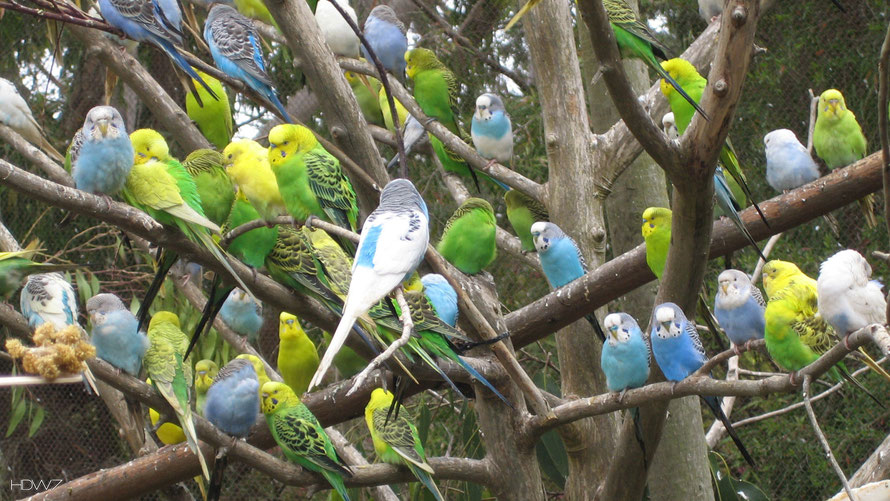

Mi top 5 de Animales Favoritos
Tecnolochicas Pro
En esta pagina enlistare mis cinco animales favoritos junto con algunas curiosidades y
aspectos importantes del mismo y la razon por la que lo considero mi animal favorito.
Agradesco a Tecnolochicas Pro por darme esta oportunidad de poder aprender a programar en HTML,
y enseñarme lo basico y mas importante para despues yo por mi cuenta seguir aprendiendo y no estar tan perdida y
se que no soy la unica que les agradece formar parte de este curso, y si les agracezco nuevamente la oportunidad de haber podido participar.
INDICE
No hay nada mas lindo y majestuoso que los animales, ya sean terrestres, acuaticos y aereos, ya que,
hay una gran variedad de especies de cada uno de estos tipos Animales como de sus variantes,
algunos que se pueden tener como mascotas y como animales de compañia, y aunque no lo crean o sepan se forman vinculos muy lindos con las mascotas,
asi que cuidenlas, valorenlas y quieranlas mucho.
Sin mas empecemos con mi "Top 5 de animales favoritos", espero les guste y agrade, Salu2!.
1.- GATOS
 El primer puesto lo ocupan los gatos, ya que amo mucho a mi gatita Lila que lleva 9 años conmigo, junto con mis otras gatitas,
Vengalita que lleva dos años con nosotros y a nuestra gatita más pequeña llamada Graisy que ya va a cumplir un año con nosotros,
y aunque ya casi cumpla un año aun esta chiquita.
El primer puesto lo ocupan los gatos, ya que amo mucho a mi gatita Lila que lleva 9 años conmigo, junto con mis otras gatitas,
Vengalita que lleva dos años con nosotros y a nuestra gatita más pequeña llamada Graisy que ya va a cumplir un año con nosotros,
y aunque ya casi cumpla un año aun esta chiquita.
Como sabemos los gatos tienen varios "sobrenombres" con los que son llamados aquí en México tales como: minino, michi y michito.
Los gatos se comunican con nosotros a travez de los maullidos y el ronroneos, pudiendo tambien aullar, gemir, gruñir y bufar. Tambien adopta poses o expresiones que nos informan su estado de animo o sus intenciones.
Los gatos son digitígrados: caminan sobre sus dedos. Las patas delanteras tienen cinco dedos, uno de los cuales no apoya sobre el suelo, y las traseras tienen cuatro dedos. Tienen garras retráctiles. Las garras están cubiertas por la piel que rodea las almohadillas de los dedos.
Entre algunas de estas curiosidades estan:
-
Los gatos se comunican con el movimiento de sus colas. Por ejemplo: si un gato está cerca de ti y agita su cola,
es la mayor expresión de cariño que puede hacer. En cambio si la agita demasiado fuerte, tanto que golpea con ella,
está de pésimo humor, es mejor que lo dejes solo un rato.
-
Hay 40 razas de gatos y estos pueden hacer mas de 100 sonidos, aparte de ser uno de los animales con un oido muy agudo.
-
Los gatitos mayormente nacen con los ojos azules y cuando los gatos empiezan a crecer se vuelven intolerante a la lactosa.
- Los gatos machos llegan a vivir entre doce y catorce años de edad mientras que las hembras suelen vivir uno o dos años más.
Links de donde saque la información:
WikiGatos y
Blog Gatos
2.- PERICOS AUSTRALIANOS

Mi segundo aminal favorito son los periquitos australianos y me gustan mucho los colores de sus plumas,
lo pequeños que son a comparasion de los guacamallos y loros.
Son una especie endemica de australia, aun que se le ha introducido en otra regiones del mundo por ser muy comun como mascota.
Siendo muy popular por ser un ave de vivos colores y su facil adaptacion, considerado como otro animal de compañia como los perros, gatos y canarios.
Estos quiriquitos miden alrededor de 18 cm,de la cabeza hasta la punta de su cola y pesan alrededor de 35 g.
Para diferenciar a los periquitos entre macho y hembra, es por el color de la cera(parte superior del pico, al rededor de las narinas).
los machos adultos la tienen completamente azul. en las hembras varia el color y esto depende de su estado de celo, siendo la cera de color azul o blanco crema cuando no estan en celo,
y es marron cuando esta en celo.
Algunas curiosidades que tal vez no conoces de estos lindos periquitos:
- Los machos son capaces de imitar el habla humana, ya que, estos periquitos son muy intelijentes, tanto hembras como machos, porque tambien saben uando juegas con ellos
- Los periquitos a la hora de dormir meten su cabeza en sus plumas a diferencia de otras aves que mantienen erguida la cabeza todo el día.
Y hablando de dormir a estas aves les gusta acurrucarse cuando llega su hora de dormir.
- Para saber si uno de estos periquitos joven o adulto hay varias maneras. Por ejemplo, los periquitos jovenes tienen su plumaje de tonos no intensos. Otra maneja de saber la edad es que,
los periquitos jovenes tienen los ojos completamente negro y a medida que crece el iris se va aclarando formando un aro blanco a su alrededor.
Links de donde saque la información:
Periquitos australianos y
periquitos australianos 2.0
3.- FLAMENCOS ROSAS
![]() La razon por la que me gustan los flamencos es por sus plumas rosas y si forma de caminar, asi como tambien me gustan como se ven cuando son chiquitos me causan mucha ternura.
La razon por la que me gustan los flamencos es por sus plumas rosas y si forma de caminar, asi como tambien me gustan como se ven cuando son chiquitos me causan mucha ternura.
Parte del Flamenco rosa existen otros 6 tipos por ejemplo esta el Gran Flamenco (habita en África, Europa y Asia), el Flamenco Menor (En África e India), el Flamenco Chileno (En América del Sur),el Flamenco de James (En América del Sur), el Flamenco Andino (En América del Sur) y el Flamenco Americano (En el Caribe).
Los flamencos crecen alrededor metro o metro y medio de altura y pesan alrededor dos kilos y medio. Los machos son generalmente un poco más grandes que las hembras, y todos suelen tener las plumas de color rojo-rosado,
lo que suele deberse a su alimentación, porque sus crías nacen siendo de color gris o blanco. También tienen sus patas rosas y un pico rosado y blanco con una punta negra.
Aunque casi siempre visualizamos a los flamencos en el agua, también pueden volar, para lo cual necesitan correr y ganar velocidad para poder despegar.
Los flamencos viven en lagos y pantanos, por lo que comen principalmente algas verdeazuladas, algas rojas, larvas de insectos y pequeños crustáceos, como camarones y moluscos. Como tienden a comer tanto plantas como carne, son animales (aves) omnívoros.
Los flamencos obtienen la mayoría de sus alimentos filtrando el lodo y el agua para obtener de ella insectos y crustáceos como los camarones. De hecho obtienen su coloración rosa de su comida gracias al llamado “carotenoide”, lo mismo que hace que las zanahorias sean anaranjadas.
Y ahoran van los datos cuiriosos sobre los flamencos:
- Los flamencos son aves muy longevas, por lo que pueden llegar a vivir hasta 40 años.
- Algunas veces las bandadas de flamentos en África alcanzar hasta el millon de flamencos.
- Los flamencos cuidan de susu crias hasta los seis años, cuando es que ya se valen por si mismos.
Link de donde saque toda la informacion:
Flamenco Rosado
4.- PANDA CAFE
Solo hay un panda cafe en el mundo, llamado Qizai, y por el sel unico panda cafe no hay mucha informacion al respecto sobre este lindo Panda.
pero eso no le quita lo lindo que es, actualmente de encuentra en la reserva del Foping Panda Valley teniendo ya 14 años de edad!.
En marzo de 1985 se encontro panda cafe en la misma reserva que Qizai (reserva natural de las Montañas de Qingling en China Central), teniendo un pejale más claro que el de Qizai, ganandose el apodo de "rubia". A este panda se le nombro como Dandan, aun que cuando la encontraron en la reserva estaba en malas condiciones al haber vivido 13 años en vida salvaje. y se sabe que hubieron otros tres mas aparte de Dandan y Qizai, pero desafortunadamente no se tienen regristros de estos.
Como dato curioso, algunos dicen que el color del pelaje de Qizai puede que sea a que esta regresando a su "forma tipica" de sus antepasados y otros que puede ser una subespecie.
link de donde saque la informacion:
Panda Cafe
5.- TIBURON BALLENA
![]() Aun que su nombre suena imponente, no es nada mas que un pez muy grande e inofensivo y mi favorito pues desde que se de su existencia !Me ha encatado!, y Pese a su enorme tamaño, el tiburón ballena es un pez dócil que a veces permite que los buceadores naden agarrados a ellos. En la actualidad figura en la lista de especies vulnerables, esto quiere decir que puede pasar a estar en peligro de extención.
Aun que su nombre suena imponente, no es nada mas que un pez muy grande e inofensivo y mi favorito pues desde que se de su existencia !Me ha encatado!, y Pese a su enorme tamaño, el tiburón ballena es un pez dócil que a veces permite que los buceadores naden agarrados a ellos. En la actualidad figura en la lista de especies vulnerables, esto quiere decir que puede pasar a estar en peligro de extención.
El tiburón ballena, al igual que el segundo pez más grande del planeta, el tiburón peregrino, se alimenta por filtración. Para comer, abre de par en par sus enormes mandíbulas y absorbe todo lo que está cerca. Después cierra la boca, expulsando y filtrando el agua por las agallas. Este grandes pez de alimenta del plancton junto a cualquier pez pequeño que se atraviece.
Algunas curiosidades sobre este gran y maravilloso pez, son:
- Prefieren las aguas calidas, por lo que los podras encontrar en todos los mares tropicales.
- Migran cada primavera a la plataforma continental de la costa oeste central de Australia. La reproducción del coral del Arrecife de Ningaloo, situado en esa zona, ofrece al tiburón ballena plancton en abundancia.
- Es el pex mas grande del mar, ya que, mide 12 metros o más!.
Link de donde saque toda la informacion:
Tiburon Ballena